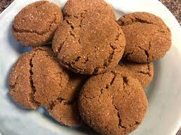

Grandma Gingersnap Cookies

Description
These gingersnap cookies will melt in your mouth. I received this ginger cookie recipe from my grandmother; it's been enjoyed in my family since 1899.
Ingredients
- 2 cups sifted all-purpose flour
- 1 tablespoon gorund ginger
- 2 teaspoon baking soda
- 1 teaspoon ground cinnamon
- 1/2 teaspoon salt
- 3/4 cup shortening
- 1 cup white sugar
- 1 egg
- 1/4 cup dark molasses
- 1/3 cup cinnamon sugar
Directions
- Preheat the oven to 350 degrees F (175 degrees C).
- Sift flour, ginger, baking soda, cinnamon, and salt into a mixing bowl. Stir the mixture until blended, then sift a second time into another bowl.
- Place shortening in a mixing bowl and beat until creamy. Gradually mix in white sugar. Beat in egg and dark molasses until light and fluffy. Sift 1/3 of the flour mixture into the shortening mixture; stir to thoroughly blend. Sift in the remaining flour mixture and mix together until a soft dough forms.
- Pinch off small amounts of dough and roll them into 1-inch-diameter balls between your hands. Roll each ball in cinnamon sugar, then place 2-inches apart on an ungreased baking sheet.
- Bake in the preheated oven until tops are rounded and slightly cracked, about 10 minutes. Cool cookies on a wire rack. Store in an airtight container.
More Recipes